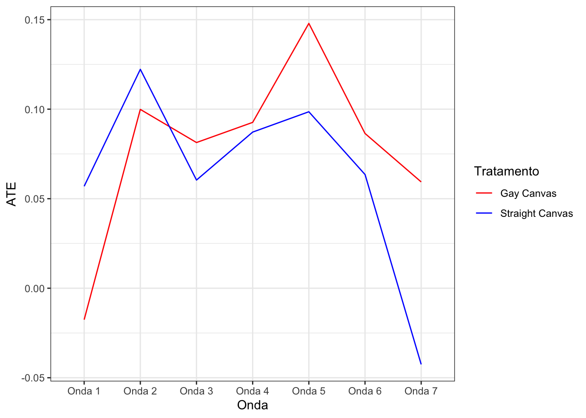

library(ggplot2)
gay <- read.csv("../dados/gay.csv")
head(gay)Exercício 4 — Experimento: contato e apoio ao casamento entre pessoas do mesmo sexo (solução)
Neste exercício, analisamos os dados de dois experimentos em que famílias foram contactadas por uma campanha em apoio ao casamento gay nos EUA. Os dados são os do estudo original de LaCour e Green (2014), que foi retratado pela revista Science em 2015 depois que se descobriu que os dados haviam sido fabricados; o exercício é adaptado de Imai, Quantitative Social Science (cap. 2), e continua útil para praticar a análise de experimentos, mas os resultados não devem ser lidos como evidência real. Os panfleteiros receberam um roteiro que conduzia a conversa da campanha, que duravam em média cerca de vinte minutos.
Uma característica distintiva deste estudo é que panfleteiros homossexuais e heterossexuais foram atribuídos aleatoriamente às famílias, sendo que os panfleteiros revelaram se eles eram heterossexuais ou gay no decorrer da conversa.
O experimento visa testar a ‘hipótese de contato’, que sustenta que a hostilidade a grupos externos (em relação aos gays, neste caso) diminui quando pessoas de grupos diferentes interagem umas com as outras. Os dados estão disponíveis no arquivo ‘gay.csv’, que é um arquivo CSV. A Tabela 2.7 do livro de Imai apresenta os nomes e descrições das variáveis neste banco de dados. Cada observação deste conjunto de dados é um respondente que respondeu sobre o apoio ao casamento gay numa escala de 5 pontos. São dois estudos diferentes neste conjunto de dados, envolvendo entrevistas durante sete rodadas diferentes (ou seja, sete ondas). Em ambos os estudos, a primeira onda consiste na entrevista antes que o tratamento da campanha ocorresse.
Nome das variávies e descrição
study Fonte do dado (1 = Study1, 2 = Study2)
treatment 5 condições: um grupo de controle (sem contato) e 4 tratamentos
wave Rodadas (do total de 7)
ssm Apoio ao casamento gay (escala de 5 pontos, em que mais é apoio)
Tratamentos
No Contact Pergunta sobre o casamento gay sem panfletagem
Recycling Script by Gay Canvasser Pergunta sobre reciclagem por um aplicador gay
Same-Sex Marriage Script by Gay Canvasser Pergunta sobre casamento gay por um aplicador gay
Recycling Script by Straight Canvasser Pergunta sobre reciclagem por um hétero
Same-Sex Marriage Script by Straight Canvasser Pergunta sobre casamento gay por um hétero1 Importando o banco de dados
1.1 Pergunta 1
Usando a primeira onda de entrevistas realizada antes de o tratamento ser administrado, examine se a randomização foi conduzida adequadamente. Baseie sua análise nos três grupos do estudo 1: “panfleteiro gay com o roteiro sobre o casamento gay,” “panfleteiro hétero com roteiro sobre o casamento gay” e “grupo de controle - sem contato”. Comente brevemente sobre os resultados.
1.2 Resposta 1
# Wave 1; Study 1
# Filtrar os dados para a primeira onda e o estudo 1
w1_gay <- subset(gay, wave == 1 & study == 1 & treatment == "Same-Sex Marriage Script by Gay Canvasser")
w1_straight <- subset(gay, wave == 1 & study == 1 & treatment == "Same-Sex Marriage Script by Straight Canvasser")
w1_none <- subset(gay, wave == 1 & study == 1 & treatment == "No Contact")
# Calcular a média de apoio ao casamento gay para o grupo com panfleteiros gays
mean(w1_gay$ssm)[1] 3.025195# Calcular a média de apoio ao casamento gay para o grupo com panfleteiros heterossexuais
mean(w1_straight$ssm)[1] 3.09971# Calcular a média de apoio ao casamento gay para o grupo sem contato
mean(w1_none$ssm)[1] 3.042764Os resultados mostram que, antes do tratamento, os três grupos têm níveis médios de apoio ao casamento gay semelhantes (em torno de 3,0 a 3,1 na escala de 5 pontos), o que é consistente com uma randomização bem feita. O grupo do panfleteiro hétero começa um pouco acima (cerca de 0,06 ponto acima do controle); diferenças pequenas como essa podem ocorrer por acaso, mas convém lembrá-las ao interpretar os efeitos (uma alternativa é comparar a mudança em relação à onda 1). Para checar formalmente, poderíamos usar testes de diferença de médias, como t.test(w1_straight$ssm, w1_none$ssm).
1.3 Pergunta 2
A segunda onda da pesquisa foi implementada 3 meses após a campanha. Usando o estudo 1, estime os efeitos médios do tratamento de panfleteiros gays e heterossexuais sobre o apoio ao casamento entre pessoas do mesmo sexo, separadamente. Dê uma breve interpretação dos resultados.
1.4 Resposta 2
# Wave 2; Study 1
# Filtrar os dados para a segunda onda (wave == 2) e o estudo 1 (study == 1)
# Separar os dados de acordo com o tipo de tratamento (panfleteiro gay, panfleteiro heterossexual e grupo sem contato)
# Dados para panfleteiros gays
w2_gay <- subset(gay, wave == 2 & study == 1 & treatment == "Same-Sex Marriage Script by Gay Canvasser")
# Dados para panfleteiros heterossexuais
w2_straight <- subset(gay, wave == 2 & study == 1 & treatment == "Same-Sex Marriage Script by Straight Canvasser")
# Dados para o grupo sem contato
w2_none <- subset(gay, wave == 2 & study == 1 & treatment == "No Contact")
# Calcular a média de apoio ao casamento gay para cada grupo (panfleteiros gays e grupo sem contato)
# E calcular a diferença entre eles (ATE para panfleteiros gays)
mean(w2_gay$ssm) - mean(w2_none$ssm)[1] 0.09987463# Calcular a média de apoio ao casamento gay para cada grupo (panfleteiros heterossexuais e grupo sem contato)
# E calcular a diferença entre eles (ATE para panfleteiros heterossexuais)
mean(w2_straight$ssm) - mean(w2_none$ssm)[1] 0.122248# Testes de diferença de médias
t.test(w2_gay$ssm, w2_none$ssm)
Welch Two Sample t-test
data: w2_gay$ssm and w2_none$ssm
t = 1.7714, df = 1480.6, p-value = 0.07669
alternative hypothesis: true difference in means is not equal to 0
95 percent confidence interval:
-0.01071947 0.21046874
sample estimates:
mean of x mean of y
3.139489 3.039615 t.test(w2_straight$ssm, w2_none$ssm)
Welch Two Sample t-test
data: w2_straight$ssm and w2_none$ssm
t = 2.0618, df = 1263.6, p-value = 0.03943
alternative hypothesis: true difference in means is not equal to 0
95 percent confidence interval:
0.005925209 0.238570724
sample estimates:
mean of x mean of y
3.161863 3.039615 Na segunda onda do estudo 1, o apoio ao casamento gay foi, em média, 0,10 ponto maior no grupo visitado por panfleteiros gays e 0,12 ponto maior no grupo visitado por panfleteiros heterossexuais, em comparação com o grupo sem contato. Os testes t mostram que a diferença para os panfleteiros heterossexuais é significativa a 5% (p ≈ 0,04), enquanto a dos panfleteiros gays é significativa apenas a 10% (p ≈ 0,08). Lembre também que, na onda 1, o grupo dos panfleteiros heterossexuais já começava um pouco acima do controle.
1.5 Pergunta 3
O estudo continha outro tratamento que envolvia contato, mas não envolvia o uso do script do casamento gay. Especificamente, os autores usaram um script para encorajar as pessoas a reciclar. Qual é o objetivo deste tratamento? Usando estudo 1 e onda 2, compare os resultados do tratamento “panfleteiro gay com o roteiro sobre o casamento gay” com “panfleteiro gay com o roteiro sobre reciclagem”. Repita a comparação para os panfleteiros heterossexuais.epita o mesmo para panlfeteiros heterossexuais, comparando o tratamento “panfleteiro hetero com o roteiro sobre o casamento gay” com “panfleteiro hétero com o roteiro sobre reciclagem”. O que estas comparações revelam? Dê uma interpretação substantiva dos resultados.
1.6 Resposta 3
Este tratamento aborda a possibilidade de que simplesmente entrar em contato com alguém pode fazer com que eles ajam de maneira diferente. Isto é potencialmente uma preocupação porque, ao fazer campanha, dois panfleteiros estão entrando em contato com alguém e também entregando um script. Para descartar a possibilidade de que o contato por si só impulsione mudanças de opinião sobre o casamento gay, os pesquisadores criaram um grupo que recebe contato com um script não relacionado ao casamento gay (reciclagem). Comparar o script do casamento gay com o de reciclagem, para o mesmo tipo de panfleteiro, isola o efeito do conteúdo da conversa, mantendo constante o efeito do contato.
# Nova linha de base para panfleteiros gays usando o script de reciclagem
w2_gay_recycling <- subset(gay, wave == 2 & study == 1 & treatment == "Recycling Script by Gay Canvasser")
# ATE para panfleteiros gays, comparando o roteiro do casamento gay com o roteiro de reciclagem
mean(w2_gay$ssm) - mean(w2_gay_recycling$ssm)[1] 0.03204239# Nova linha de base para panfleteiros heterossexuais usando o script de reciclagem
w2_straight_recycling <- subset(gay, wave == 2 & study == 1 & treatment == "Recycling Script by Straight Canvasser")
# ATE para panfleteiros heterossexuais, comparando o roteiro do casamento gay com o roteiro de reciclagem
mean(w2_straight$ssm) - mean(w2_straight_recycling$ssm)[1] 0.1575845A análise mostra que, seja entregue por panfleteiros homossexuais ou heterossexuais, o roteiro do casamento gay produz apoio maior do que o script de reciclagem na onda 2 (cerca de 0,03 ponto para panfleteiros gays e 0,16 para heterossexuais).
Mas atenção às diferenças que já existiam antes do tratamento. Na onda 1, o grupo “hétero + casamento gay” já estava acima do grupo “hétero + reciclagem”, e o grupo “gay + casamento gay” estava abaixo do grupo “gay + reciclagem”. Comparando a mudança entre as ondas 1 e 2 (uma diferença em diferenças), a conclusão se inverte:
media_onda <- function(trat, onda) mean(gay$ssm[gay$study == 1 & gay$wave == onda & gay$treatment == trat])
# Panfleteiros gays: (casamento − reciclagem) na onda 2 menos a mesma diferença na onda 1
(media_onda("Same-Sex Marriage Script by Gay Canvasser", 2) - media_onda("Recycling Script by Gay Canvasser", 2)) -
(media_onda("Same-Sex Marriage Script by Gay Canvasser", 1) - media_onda("Recycling Script by Gay Canvasser", 1))[1] 0.137822# Panfleteiros heterossexuais
(media_onda("Same-Sex Marriage Script by Straight Canvasser", 2) - media_onda("Recycling Script by Straight Canvasser", 2)) -
(media_onda("Same-Sex Marriage Script by Straight Canvasser", 1) - media_onda("Recycling Script by Straight Canvasser", 1))[1] 0.07134936Levando em conta o ponto de partida de cada grupo, o efeito do roteiro é maior para os panfleteiros gays (cerca de 0,14) do que para os heterossexuais (cerca de 0,07). A lição: mesmo em experimentos, pequenas diferenças pré-tratamento podem mudar a leitura de comparações entre subgrupos.
1.7 Pergunta 4
No estudo 1, os autores entrevistaram os entrevistados seis vezes diferentes (em ondas 2 a 7) após o tratamento, em intervalos de dois meses. A última entrevista, em onda 7, ocorre um ano após o tratamento. Os efeitos da campanha duram? E se duram, em que condições? Responda a essas perguntas calculando separadamente os efeitos médios de panfleteiros heterossexuais e gays com o roteiro sobre casamento do mesmo sexo para cada uma das ondas subsequentes (em relação à condição de controle).
1.8 Resposta 4
# Filtrar os dados para os grupos de panfleteiros gays e heterossexuais, além do grupo sem contato, no estudo 1
s1_gay <- subset(gay, study == 1 & treatment == "Same-Sex Marriage Script by Gay Canvasser")
s1_straight <- subset(gay, study == 1 & treatment == "Same-Sex Marriage Script by Straight Canvasser")
s1_none <- subset(gay, study == 1 & treatment == "No Contact")
# Calcular a média de apoio ao casamento gay para o grupo sem contato em cada onda
s1_baseline <- tapply(s1_none$ssm, s1_none$wave, mean)
# Calcular os efeitos médios do tratamento (ATEs) para os panfleteiros gays em cada onda
gay_c <- tapply(s1_gay$ssm, s1_gay$wave, mean) - s1_baseline
# Calcular os efeitos médios do tratamento (ATEs) para os panfleteiros heterossexuais em cada onda
straight_c <- tapply(s1_straight$ssm, s1_straight$wave, mean) - s1_baseline
# Juntando em um banco de dados
onda <- c("Onda 1", "Onda 2", "Onda 3", "Onda 4", "Onda 5", "Onda 6", "Onda 7")
bd <- data.frame(gay_c,straight_c, onda)
# Plotando para conferir
bd |>
ggplot(aes(x = onda)) +
geom_line(aes(y = gay_c, color = "Gay Canvas", group = 1)) +
geom_line(aes(y = straight_c, color = "Straight Canvas", group = 1)) +
scale_color_manual(values = c("red", "blue")) +
labs(color = "Tratamento", y = "ATE", x = "Onda") +
theme_bw()
Os efeitos parecem durar algum tempo. Para os panfleteiros gays, a diferença em relação ao controle se mantém positiva em todas as ondas pós-tratamento (de cerca de 0,10 na onda 2 a 0,06 na onda 7), partindo de um grupo que começou levemente abaixo do controle na onda 1 (−0,02). Para os panfleteiros heterossexuais, o efeito cai já na onda 3 (cerca de 0,06) e desaparece na onda 7 (−0,04), e esse grupo começou acima do controle (+0,06), o que sugere que parte da diferença inicial nem era efeito da campanha. Ou seja, o efeito parece mais persistente quando o panfleteiro é gay, coerente com a hipótese de contato.